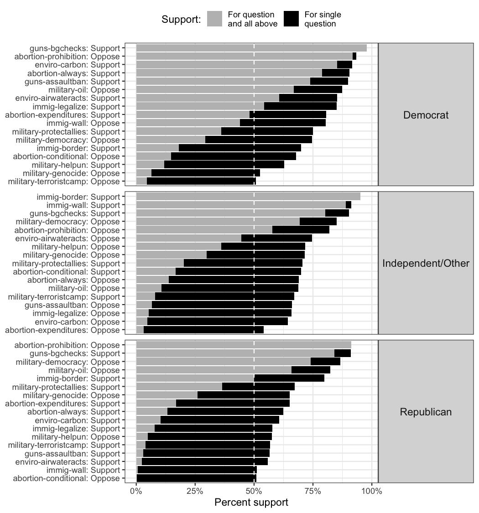
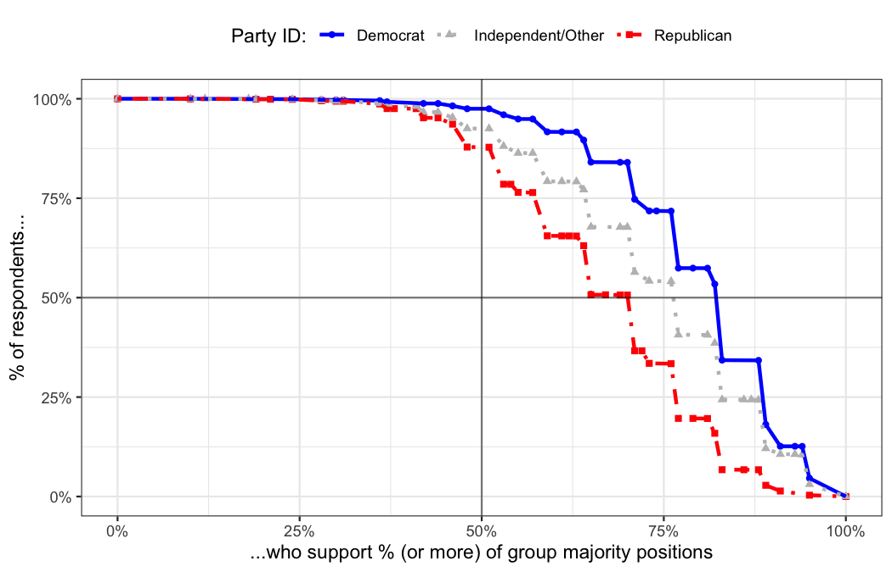
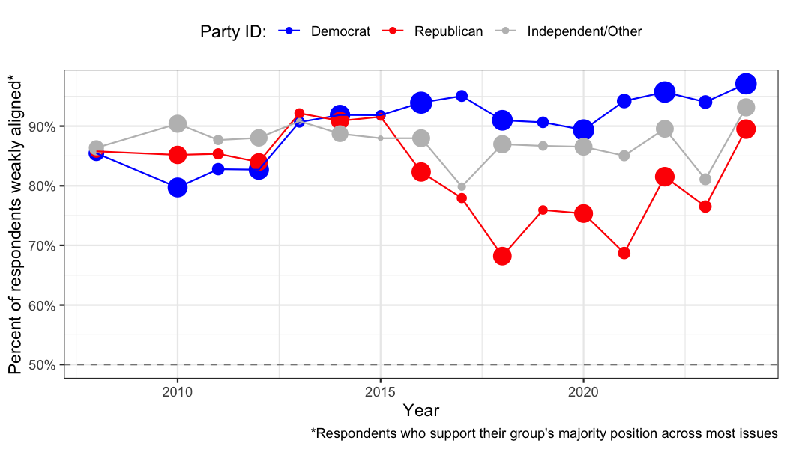

Democracy doesn’t work one issue at a time.
survalign measures within-group alignment in survey data: how unified a group’s members are cumulatively across a basket of issues, not just one at a time.
Traditional issue-by-issue polling can make fractured coalitions look cohesive. A group may show 60% support on each of five issues separately, yet only 10% of its members agree on all five at once. survalign quantifies this gap with a suite of alignment metrics.
Key Metrics
Each metric captures a different facet of how cohesive a group is across its full issue basket.
| Metric | Question it answers | Example insight |
|---|---|---|
| Alignment Mean | On average, how aligned is a group member with the group majority across issues? | “The typical Republican agrees with their party on only 3 out of 6 core issues.” |
| Cumulative Weak Alignment | What share of group members agree on at least half of issues? | “A third of self-identified Democrats disagree with their own party on most core issues.” |
| Cumulative Perfect Alignment | What share of group members agree on every issue? | “Only 42% of Trump voters fully back the Republican issue agenda across all issues.” |
| Issue Alignment | How many issues cumulatively have majority support from a group? | “Hispanic voters reach a true majority consensus on just 2 of 6 issues.” |
| Alignment Curve | What share of the group supports what percent of issues? | “Gen-Z women look unified issue-by-issue, but the curve reveals most voters defect on at least one.” |
Installation
Install the development version from GitHub:
# install.packages("pak")
pak::pak("soubhikbarari/survalign")Quick Example
Call measure_alignment() with a data frame, a regex matching your question columns, and a grouping variable — it returns a survalign object containing per-respondent scores, group-level statistics, and everything needed for plotting.
library(survalign)
library(dplyr)
library(ggplot2)
# Load bundled CES data
data(ces)
# Measure alignment on core policy items for 2024, by party
align <- ces |>
filter(year == 2024) |>
measure_alignment(
ques_stem = "(abort|immig|enviro|guns|military|trade)",
group_col = "pid3",
id_col = "id",
verbose = FALSE
)Visualize Alignment
plot_cumulative_majority() shows per-item and cumulative plurality support side by side, making it easy to see where joint-issue agreement breaks down even when individual-issue support looks high.
plot_cumulative_majority(align)
plot_alignment_curve() plots the share of group members who agree with their group on at least x% of issues — a full distribution, not just a single summary statistic.
plot_alignment_curve(align)
Track Alignment Over Time
measure_alignment_waves() wraps measure_alignment() across survey waves so you can track how group cohesion has shifted over time.
ces |>
measure_alignment_waves(
ques_stem = "(abort|immig|enviro|guns|military|trade)",
) |>
plot_group_stat_over_time(
metric = "cumulative_weak_alignment",
)
Learn More
Full documentation and worked case studies are available on the package website.
- Understanding Group Alignment — conceptual explainer with toy data
- CES Case Study — partisan alignment in the Cooperative Election Study
- GSS Case Study — long-run trends in the General Social Survey